Is Deep Learning Secure for Robots?
Han Wu, Johan Wahlström and Sareh Rowlands, University of Exeter
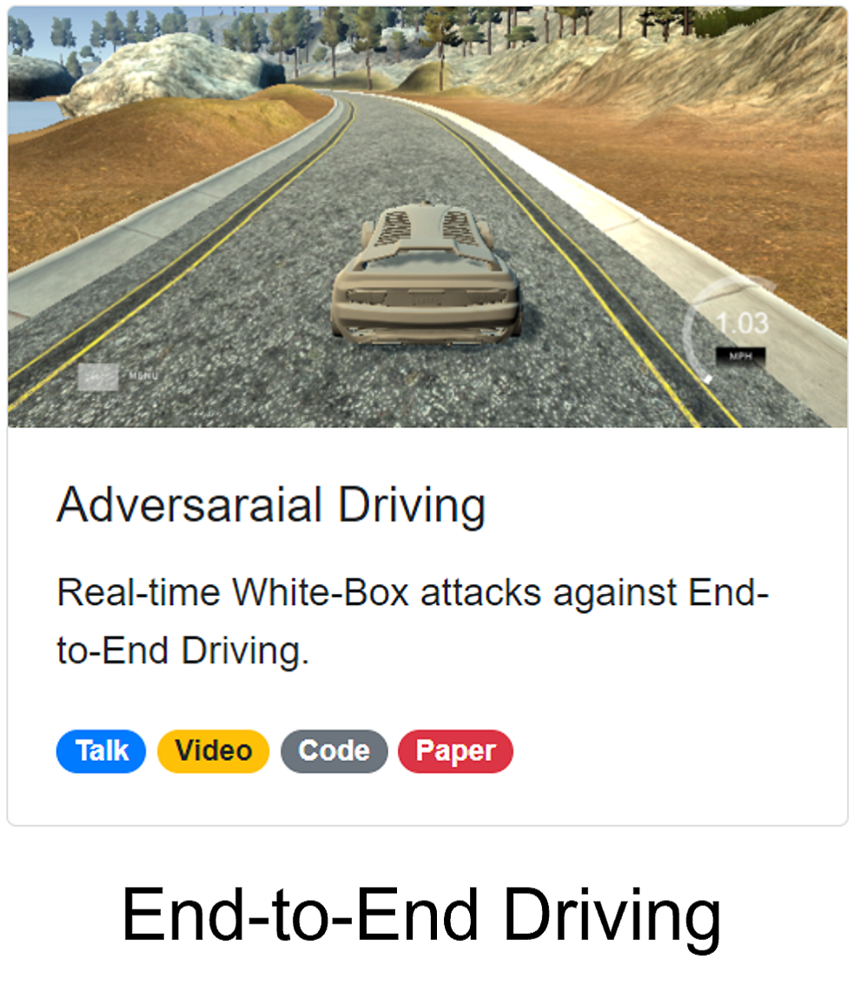
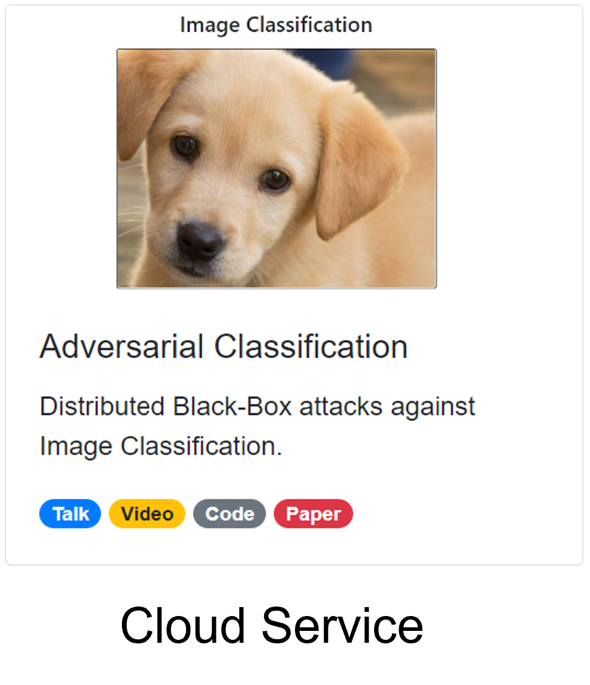
Source Code
Hi, I'm Han Wu, a third-year Ph.D. student in Computer Science. Here's my resarch question: Is Deep Learning Secure for Robots?
Adversarial Driving
Attacking End-to-End Driving Models
Source Code
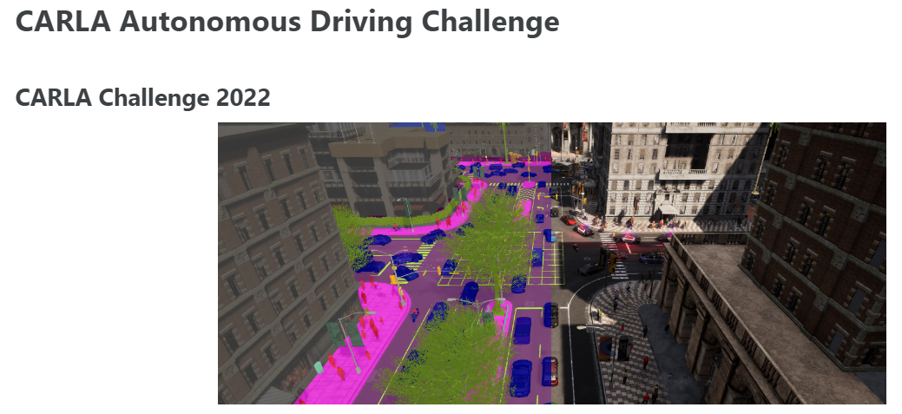
Almost all the top 10 teams on the leaderboard use end-to-end driving models.
End-to-End driving models lead to smaller systems and better performance.
For autonomous driving, end-to-end driving models are getting more popular. For example, almost all the top 10 teams in the CARLA autonomous driving challenge use end-to-end driving models.
Adversarial Attacks against End-to-End Driving
Your browser does not support the video tag.
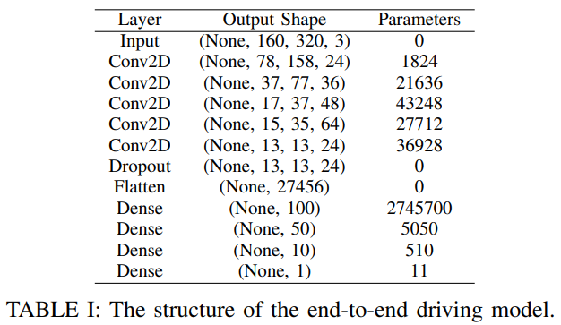
The NVIDIA End-to-End Driving Model
Researchers from NVIDIA even tested their end-to-end driving models on a real autonomous driving car.
Adversarial attacks against image classification [1]
Adversarial attacks against object detection
[1] J. Z. Kolter and A. Madry, Adversarial Robustness - Theory and Practice, NeurIPS 2018 tutorial.
Say for example, on the left side, we have a pig, and it is recognized as a pig by the image classification model. If we apply a small perturbation to the image, we have another pig on the right side.
Problem Definition
Given an input image ùë• and the end-to-end driving model $ y = f(\theta, x) $.
Our objective is to generate an adversarial image $ x^{'} = x + \eta $ such that:
$$ y^{'}=f(ùúÉ,x^{'}) \neq y $$
To ensure that the perturbation is unperceivable to human eyes:
$$ \Vert x^{'}-x \Vert_2 = \Vert{\ \eta\ }\Vert_2 \leq \xi, \text{where } \xi=0.03 $$
For offline attacks , we can use pre-recorded human drivers' steering angles as the ground truth $y^*$.
$$ \eta = \epsilon\ sign(\nabla_x J(y,\ y^{*} )) $$
For a real-time online attack , we do not have access to the ground truth $y^*$.
$$ \eta = \epsilon\ sign(\nabla_x J(y)) $$
It is unsafe to attack a real autonomous driving car. We first tested our attacks in a autonomous driving simulator. Here we have the NVIDIA end-to-end driving model which was tested on a real autonomous driving car. The driving model takes image from the camera as input and outputs the steering angle directly.
Random Noises
Before applying our attacks, we apply random noises to the input image.
As you can see here, after applying random noises, the output steering angle with and without random noises overlap with each other. They are very close. As a result, random noises have little effect on the end-to-end driving model.
Image-Specific Attack
Output: Steering Angle ù붂àà[-1, 1]
Decrease the output (left):
$$ J_{left}(y)= - y $$
Increase the output (right):
$$ J_{left}(y)= y $$
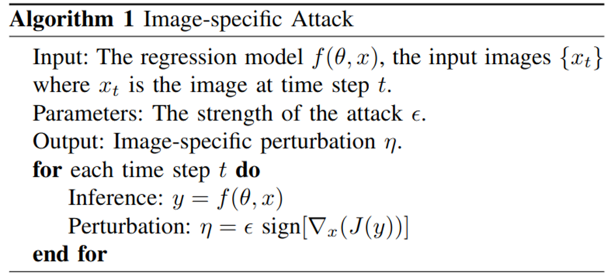
We propose two online white-box adversarial attacks against the end-to-end driving model. We attack the driving model by applying adversarial perturbations to the input image.
The image-specfic attack generates adversarial perturbations for each input image. This is a very strong attack. As you can see here, the vehicle gets out of control immediately after applying the adversarial perturbations.
Image-Agnostic Attack
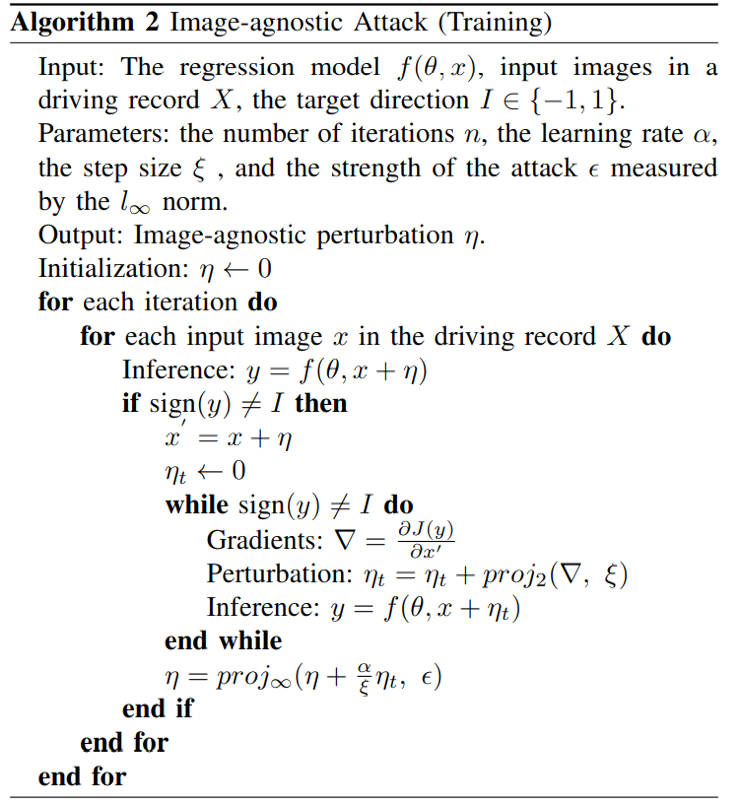
On the other hand, the image-agnostic attack generates a single adversarial perturbations that attacks all input images.
The image-agnostic attack is like an invisible force that makes the vehicle difficult to make a turn at corners, which could cause traffic accidents at some critical points. Like this one. That was close, isn't it?
Adversarial Detection
Attacking Object Detection in Real Time
Source Code
Adversarial Filter
Adversarial Patch
Adversarial Overlay
How different attacks apply the perturbation $\delta$ using a binary mask $m \in \{0, 1\}^{wh}$
$x^{'}_{filter} = x + \delta$
$x^{'}_{overlay} = x + m \odot \delta$
$x^{'}_{patch} = (1-m) \odot x + m \odot \delta$
Prior research used adversarial filter and adversarial patch to fool object detection models.
Let's see a real-time demo. We tested our attacks in ROS Gazebo Simulator. The obeject detection model seems to be stable. Now let's generate some traffic signs in the air. Interesting, isn't it?
Given an input image $x$, the object detection model outputs $S \times S$ candidate bounding boxes $o \in \mathcal{O}$ at three different scales.
Each candidate box $o^i$ contains $(b_x^i, b_y^i, b_w^i, b_h^i, c^i, p_1^i, p_2^i, ..., p_K^i)$ for K classes, where $0 \leq i \leq |\mathcal{O}|$.
$$\begin{aligned} \text{One-Targeted}:\ \mathcal{L}_{adv}^{1}(\mathcal{O}) &= \max_{1 \leq i \leq |\mathcal{O}|}\ [\sigma(c^i) * \sigma(p^i_t)] \\
\text{Multi-Targeted}:\ \mathcal{L}_{adv}^{2}(\mathcal{O}) &= \sum^{|\mathcal{O}|}_{i = 1}\ [\sigma(c^i) * \sigma(p^i_t)] \\
\text{Multi-Untargeted}:\ \mathcal{L}_{adv}^{3}(\mathcal{O}) &= \sum^{|\mathcal{O}|}_{i = 1} \sum_{j=1}^{K}\ [\sigma(c^i) *\sigma(p^i_j)] \end{aligned}$$
where $|\mathcal{O}| = \sum_{1 \leq i \leq 3} S_i \times S_i \times B$, and $S_i$ represents the grid size of the $i_{th}$ output layer ($S \in \{13,26,52\}$, $B=3$).
In the research paper, we introduce how we generate adversarial overlays using three adversarial loss functions. You can also test our attacks without using Turtlebot.
Here we demonstrate our attacks using a USB camera. For example, let's fabricate some objects at right top corner. Now, we have umbrella and person. We open-sourced our system on Guthub.
Adversarial Classification
Distributed Black-box Attacks against Image Classification
Source Code
DeepAPI - The Cloud API we attack
We open-source our image classification cloud service for research on black-box attacks.
The cloud API we attack is DeepAPI, an image classification cloud service we open-source for research on black-box attacks.
Here's a quick demo. We can upload images to the cloud server, and receive the classification results.
DeepAPI Deployment
Using Docker
$ docker run -p 8080:8080 wuhanstudio/deepapi
Serving on port 8080...
Using Pip
$ pip install deepapi
$ python -m deepapi
Serving on port 8080...
To make the deployment of DeepAPI easier, we provide a Docker image as well as a python package which can be installed via pip install deepapi, and start the server using a single command.
How to accelerate Black-Box attacks?
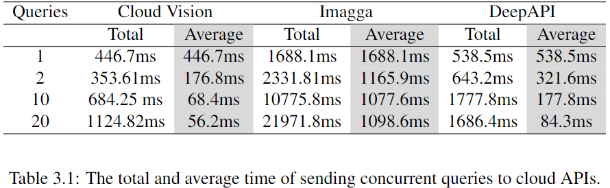
Cloud APIs are deployed behind a load balancer that distributes the traffic across several servers.
Well, how can we accelerate Black-Box attacks?
Local Models & Cloud APIs
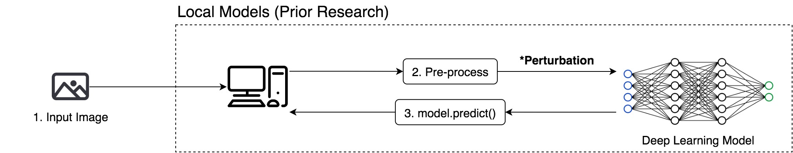
Most prior research used local models to test black-box attacks.
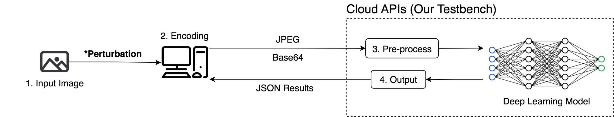
We initiate the black-box attacks directly against cloud services.
Most prior research used local models to test black-box attacks because sending queries to cloud services is slow, while querying a local model with GPU acceleration is much faster.
Attacking Cloud APIs is more challenging than attacking local models
Attacking cloud APIs achieve less success rate than attacking local models.
Attacking cloud APIs requires more queries than attacking local models.
Our experimental results demonstrate that attacking Cloud APIs is more challenging than attacking local models. For local search and gradient estimation methods, attacking cloud APIs achieve less success rate than attacking local models. In our experiments, we limit the number of queries for each image to be at most 1,000, which is quite challenging. As a result, the baseline method only achieves a success rate of roughly 5%.
Horizontal Distribution
Horizontal Distribuion sends out concurrent queries across images at the same iteration, so we receive the query results for different images simultaneously, and then move on to the next iteration.
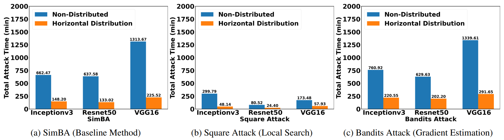
Horizontal distribution reduces the total attack time by a factor of five.
After applying horizontal distribution, we can see that the total attack time is reduced by a factor of five. The total time of attacking 100 images was reduced from over 20h to 4h.
Vertical Distribution
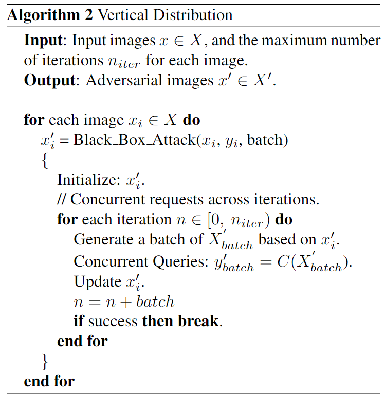
On the other side, vertical distribution sends out concurrent queries across iterations for the same image. For each image, we generate multiple adversarial perturbations and send out queries concurrently across iterations.
Vertical distribution achieves succeesful attacks much earlier.
After applying vertical distribution, besides reducing the attack time, both local search and gradient estimation methods achieve early successful attacks. The probability of the original predicted class drops faster.
Conclusion
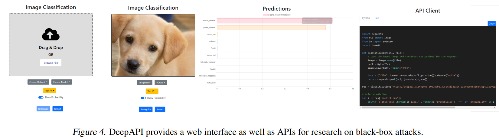
In conclusion, our research demonstrates that it is possible to exploit load balancing to accelerate online black-box attacks against cloud services.
The Man-in-the-Middle Attack
A Hardware Attack against Object Detection
Source Code
Deep learning models are vulnerable to adversarial attacks.
To achieve real-time adversarial attacks, we need to solve two problems:
How to generate the perturbation? (The PCB Attack)
How to apply the perturbation? (The Man-in-the-Middle Attack)
Now, we see deep learning models are vulnerable to adversarial attacks, but to achieve real-time adversarial attacks, we need to solve two problems: how to generate the perturbation and how to apply the perturbation efficiently?
Step 1: Generating the perturbation (The PCB Attack)
Objective:
$$ \min_{\mathcal{W}} \ \mathcal{L}_{train} = f(\mathcal{W}; x, \mathcal{O}) \;\;\;\; \max_{x} \ \mathcal{L}_{adv} = f(x; \mathcal{O}^{\ast}, \mathcal{W}) $$
Adversarial Loss:
$$ \mathcal{L}_{PC}(x) = \sum{\sigma(c_i) * \sigma(p_i)} \;\;\;\; \mathcal{L}_{PCB}(x) = \frac{\sum{(\sigma(c_i) * \sigma(p_i)}}{\sum{[\sigma(w_i) * \sigma(h_i)]^2}} $$
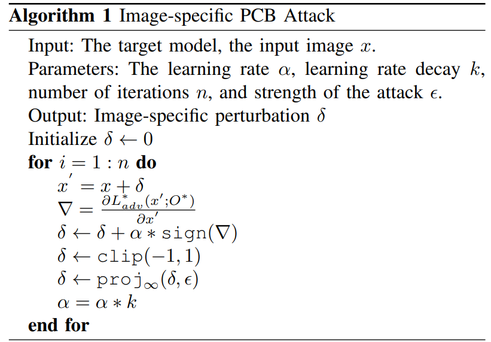
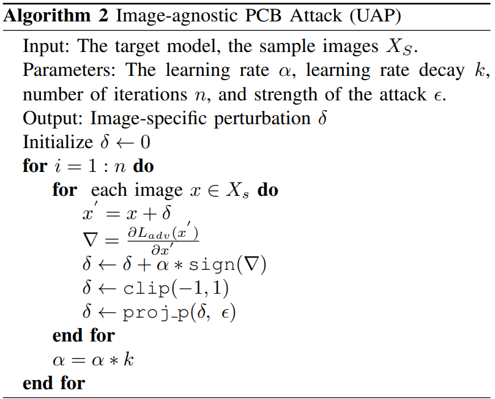
In the first step, we generate a single Universal Adversarial Perturbation to fool all the images from the camera. Our method generates more bounding boxes and has less variation.
Step 1: Generating the perturbation (The PCB Attack)
Prior Research
Our Method
Your browser does not support the video tag.
Your browser does not support the video tag.
No learning rate decay
With learning rate decay
Our method generates more bounding boxes, and have less variation.
In the first step, we generate a single Universal Adversarial Perturbation to fool all the images from the camera. Our method generates more bounding boxes and has less variation.
Step 2: Applying the perturbation (The Man-in-the-Middle Attack)
In the next step, to apply the perturbation, prior research introduced digital attack and physical attack. The digital attack requires access to the operating system, but hacking into the operating system is not trivial. The physical attack can print the perturbation on a poster, but the poster needs to be placed close to the camera. This is challenging for robotic applications in dynamic environments.
Here's a quick demo. We have a USB camera and a detection system. We used a raspberry pi version 4 to inject the perturbation. The raspberry pi reads the image from the USB camera, injects the perturbation, and then simulates a virtual camera to the detection system. The detection system has no idea that the image is manipulated.
After injecting the perturbation, the detection system detects a large number of objects everywhere. Unbelievable! Right?
Is Deep Learning Secure for Robots?
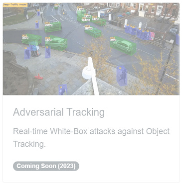
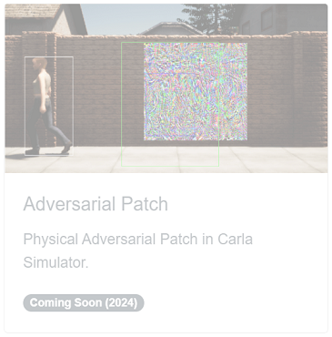
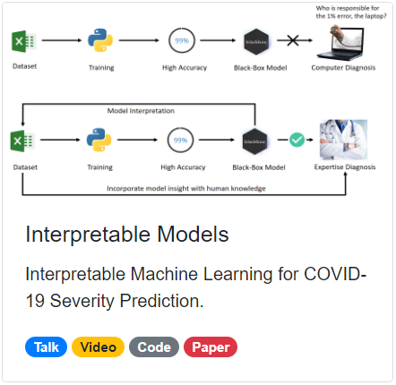
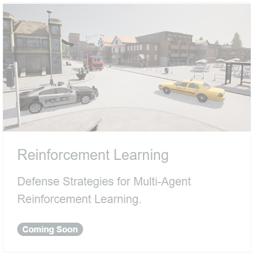
 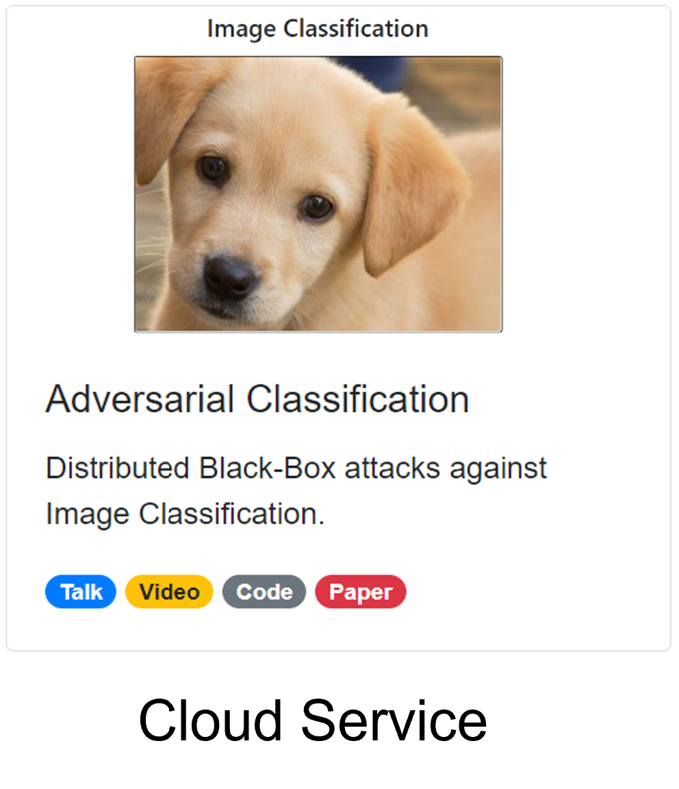
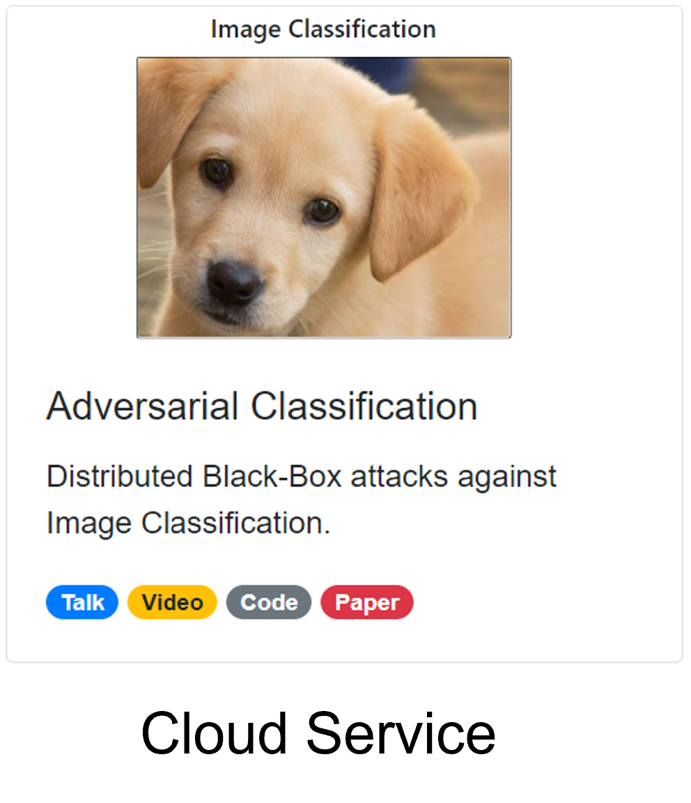


 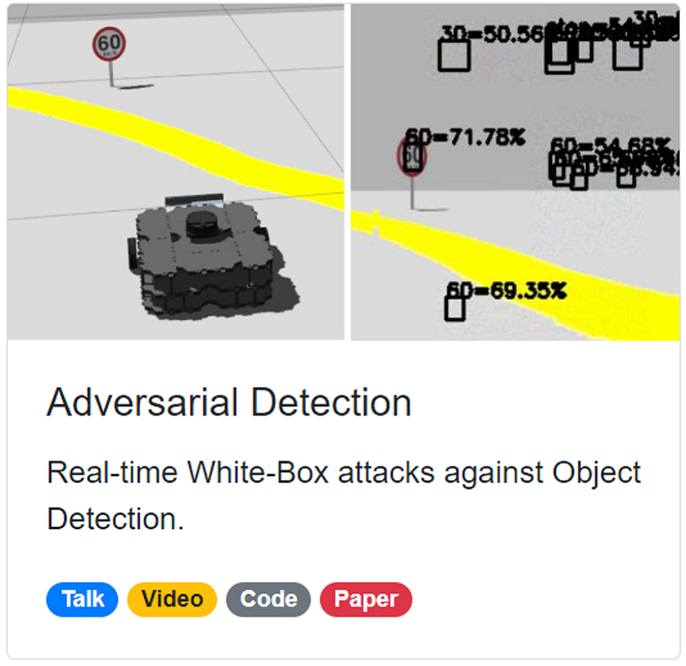
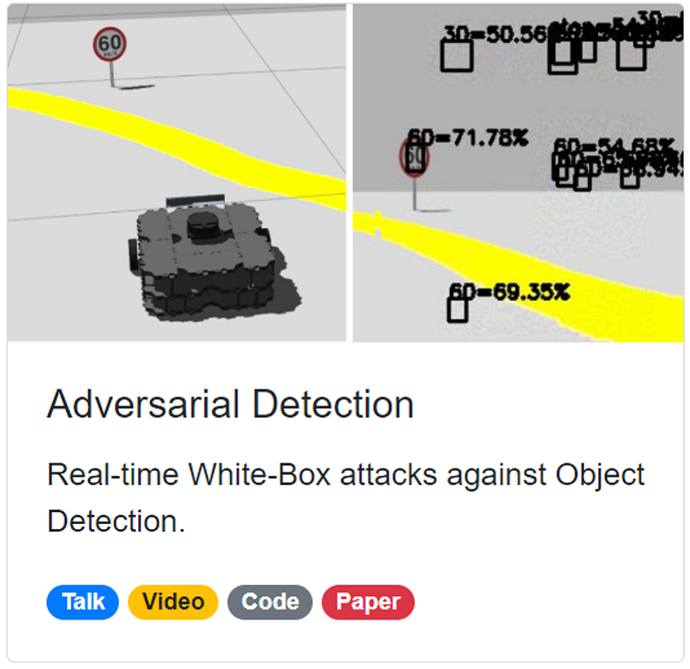